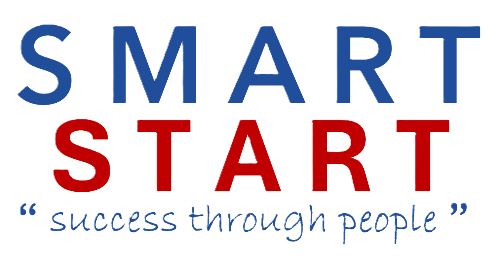

Created by Smart Resource SolutionsWhere is the pressure coming from?
Spot where work, ownership or capacity is getting stuck.
Rate a short set of statements across six areas of the business. This shows you where the pressure is really coming from, so you can work out what to do about it with a clearer picture.
Take your time with this. There are no right or wrong answers, just what feels true today.